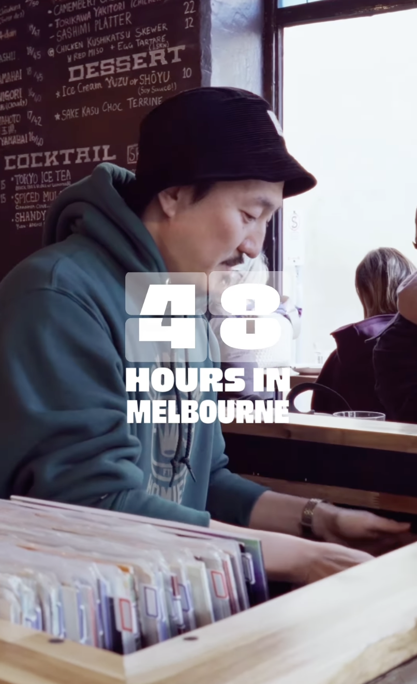

18th Day
I started the 48 hours in melbourne raw footage organisation sheet. I have been getting faster and this program and scripting the folders to be made into an google sheets file. I learnt the importance of file organsiation within media and contributed a start to the 48 hours in melbourne annotation task (with over 200 videos to sort)
19th Day
Today I did annotation for the 48 hours in melbourne. I learnt with repeptive tasks on my computer its important I take half an hour screen breaks (even just 1 minute) as I can get fixated and strain my eyes. I achieved getting through repetive tasks and contributed further contribution to the annotation sheet.
 Link to Final Instagram Reel20th Day
 Link to Final Instagram Reel
Link to Final Instagram Reel
Today I worked on more BTS file annotation. I learned that admin and organisation tasks and essentail for keeping everything running smoothly. I achieved and contributed to helping do the BTS sheet which contributes to the other editors for the 48 hours in melbourne video.